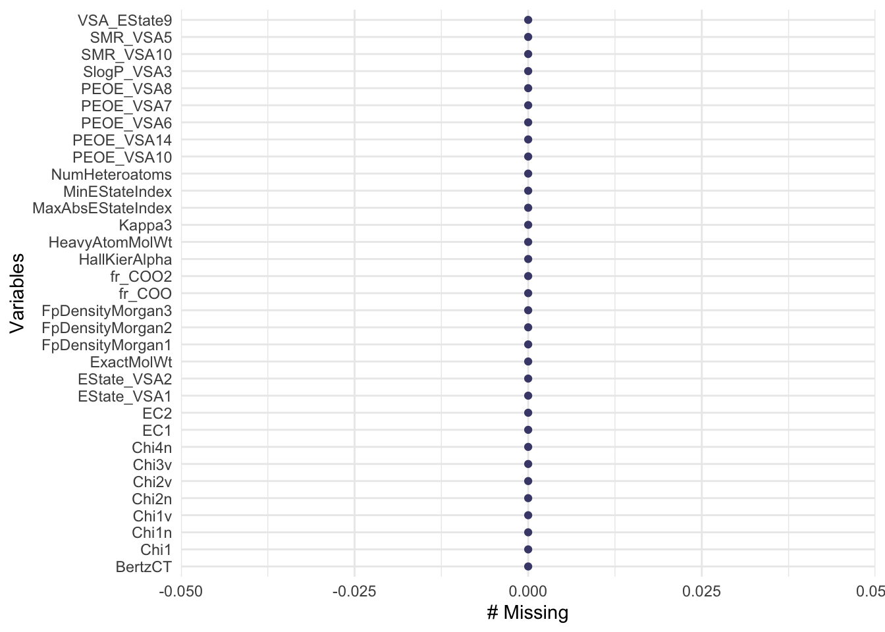
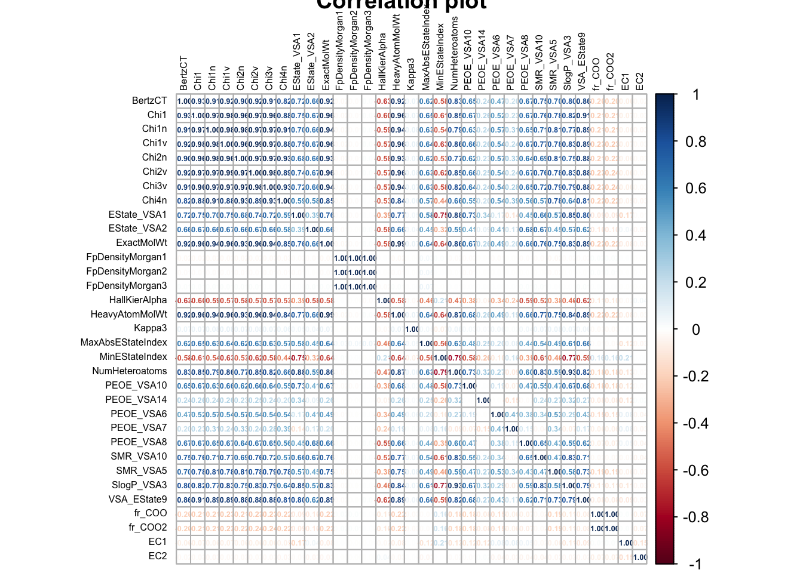
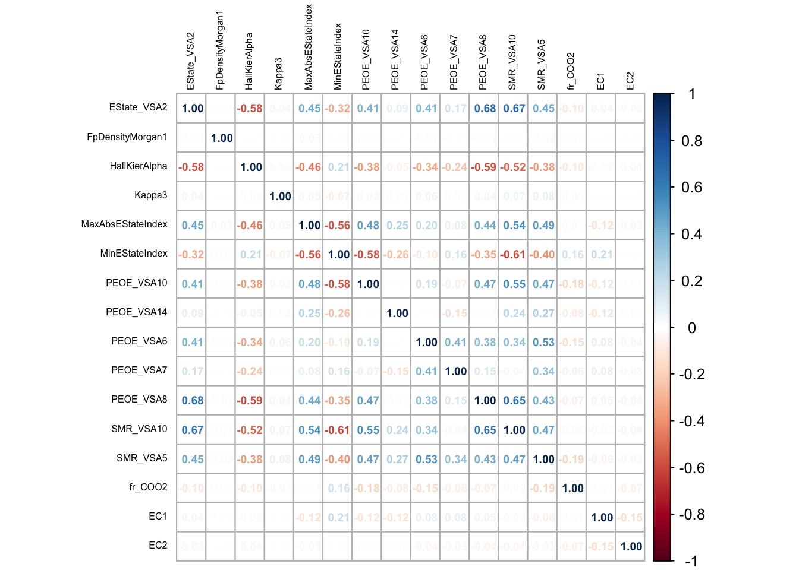
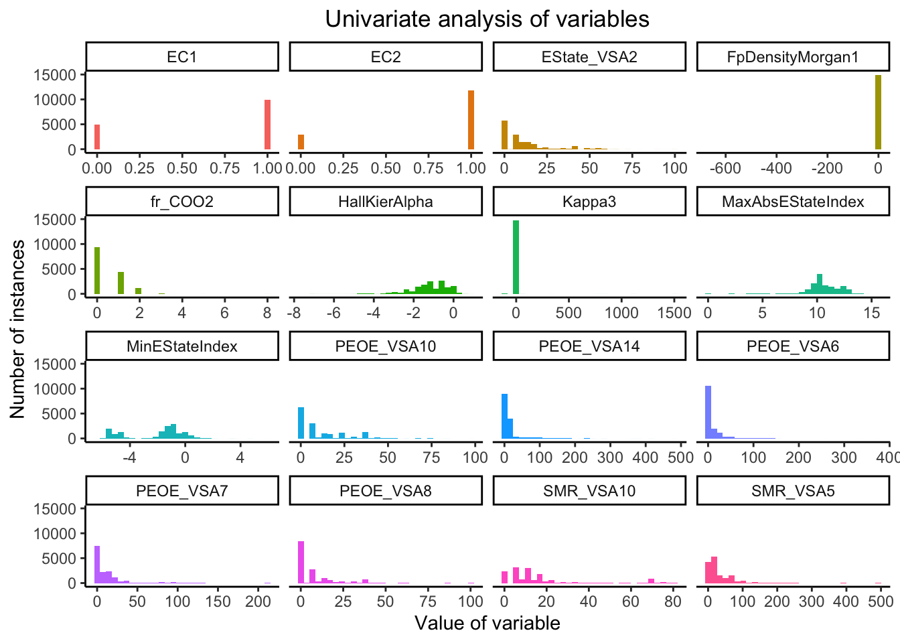
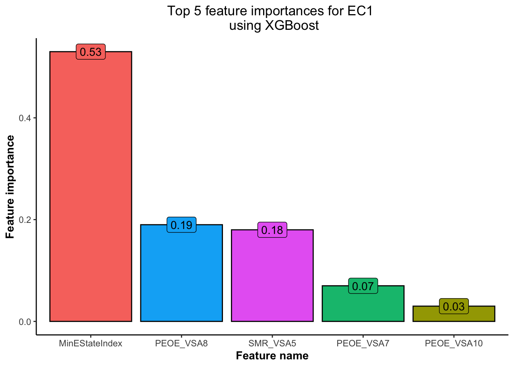
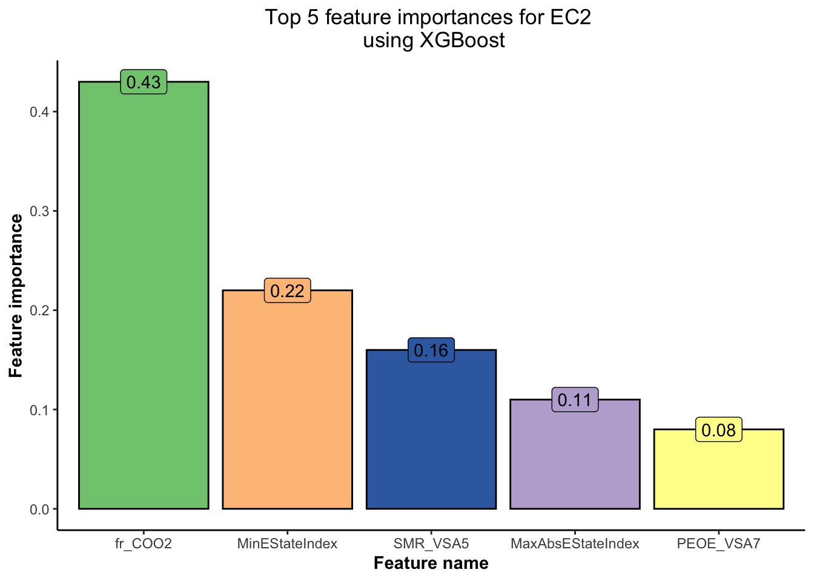
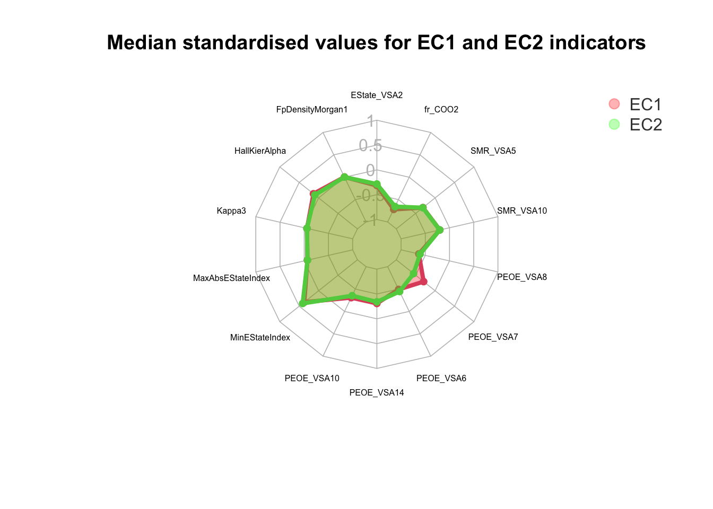

# A tibble: 6 × 38
id BertzCT Chi1 Chi1n Chi1v Chi2n Chi2v Chi3v Chi4n EState_VSA1
<dbl> <dbl> <dbl> <dbl> <dbl> <dbl> <dbl> <dbl> <dbl> <dbl>
1 0 323. 9.88 5.88 5.88 4.30 4.30 2.75 1.75 0
2 1 274. 7.26 4.44 5.83 3.29 4.49 2.20 1.29 45.1
3 2 522. 10.9 8.53 11.1 6.67 9.52 5.82 1.77 15.6
4 3 567. 12.5 7.09 12.8 6.48 11.0 7.91 3.07 95.6
5 4 113. 4.41 2.87 2.87 1.88 1.88 1.04 0.728 18.0
6 5 145. 5.54 3.48 3.48 2.48 2.48 1.51 0.671 36.9
# ℹ 28 more variables: EState_VSA2 <dbl>, ExactMolWt <dbl>,
# FpDensityMorgan1 <dbl>, FpDensityMorgan2 <dbl>, FpDensityMorgan3 <dbl>,
# HallKierAlpha <dbl>, HeavyAtomMolWt <dbl>, Kappa3 <dbl>,
# MaxAbsEStateIndex <dbl>, MinEStateIndex <dbl>, NumHeteroatoms <dbl>,
# PEOE_VSA10 <dbl>, PEOE_VSA14 <dbl>, PEOE_VSA6 <dbl>, PEOE_VSA7 <dbl>,
# PEOE_VSA8 <dbl>, SMR_VSA10 <dbl>, SMR_VSA5 <dbl>, SlogP_VSA3 <dbl>,
# VSA_EState9 <dbl>, fr_COO <dbl>, fr_COO2 <dbl>, EC1 <dbl>, EC2 <dbl>, …
1 Introduction
The Enzyme Commission (EC) system is a widely accepted classification system used to categorize enzymes based on their catalytic activities. Enzymes play crucial roles in biological processes by accelerating chemical reactions and facilitating various metabolic pathways within living organisms. The EC system assigns a unique EC number to each enzyme, which provides valuable information about its function and specificity.
What are we trying to study ?
EC1 represents the class of enzymes known as oxidoreductases. These enzymes catalyze oxidation-reduction reactions, which involve the transfer of electrons between molecules. Oxidoreductases are involved in a wide range of biological processes, including energy production, biosynthesis, and detoxification. Examples of oxidoreductases include dehydrogenases, oxidases, reductases, and peroxidases.
The Enzyme Commission (EC) system provides a systematic and standardized approach for classifying enzymes based on their catalytic activities. EC1 represents the class of oxidoreductases, which participate in oxidation-reduction reactions, while the second digit in the EC number provides more specific information about the enzyme’s function. This classification system facilitates the study of enzymes and helps researchers gain insights into their structure, function, and potential applications in various fields, including medicine, biotechnology, and industrial processes.
- The internet
Great ! We have all the libraries loaded. Next, we are gonna load the required dataset for conducting the enzyme classification analysis.
We will use one dataset for the purpose of exploratory data analysis and training the classification model while the test dataset for testing the classification model on a completely new dataset.
We can observe that there are multiple process parameters present in the dataset which can help us analyse and predict the values of EC1 and EC2. But what do all these variables tell us ? Following are the explanations of each of these variables.
Id: This feature represents the identifier or unique identification number of a molecule. It serves as a reference but doesn’t directly contribute to the predictive model.
BertzCT: This feature corresponds to the Bertz complexity index, which measures the structural complexity of a molecule. It can provide insights into the intricacy of molecular structures.
Chi1 : The Chi1 feature denotes the 1st order molecular connectivity index, which describes the topological connectivity of atoms in a molecule. It characterizes the atomic bonding pattern within the molecule.
Chi1n : This feature is the normalized version of the Chi1 index. It allows for standardized comparisons of the 1st order molecular connectivity across different molecules.
Chi1v : The Chi1v feature represents the 1st order molecular variance connectivity index. It captures the variance or diversity in the connectivity of atoms within a molecule.
Chi2n : The Chi2n feature indicates the 2nd order molecular connectivity index, which provides information about the extended connectivity of atoms in a molecule. It considers the neighboring atoms of each atom in the molecule.
Chi2v : Similar to Chi2n, the Chi2v feature measures the variance or diversity in the extended connectivity of atoms within a molecule at the 2nd order level.
Chi3v : The Chi3v feature represents the 3rd order molecular variance connectivity index. It captures the variance in the 3rd order connectivity patterns among atoms in a molecule.
Chi4n : This feature corresponds to the 4th order molecular connectivity index, which provides information about the extended connectivity of atoms in a molecule. The Chi4n index is normalized to allow for consistent comparisons across molecules.
EState_VSA1 : EState_VSA1 is a feature that relates to the electrotopological state of a molecule. Specifically, it represents the Van der Waals surface area contribution for a specific atom type, contributing to the overall electrotopological state.
EState_VSA2 : Similar to EState_VSA1, EState_VSA2 also represents the electrotopological state but for a different specific atom type.
ExactMolWt : This feature denotes the exact molecular weight of a molecule. It provides an accurate measurement of the mass of the molecule.
FpDensityMorgan1 : FpDensityMorgan1 represents the Morgan fingerprint density for a specific radius of 1. Morgan fingerprints are a method for generating molecular fingerprints, and this feature captures the density of those fingerprints.
FpDensityMorgan2 : Similar to FpDensityMorgan1, this feature represents the Morgan fingerprint density for a specific radius of 2.
FpDensityMorgan3 : FpDensityMorgan3 corresponds to the Morgan fingerprint density for a specific radius of 3.
HallkierAlpha : The HallkierAlpha feature denotes the Hall-Kier alpha value for a molecule. It is a measure of molecular shape and can provide insights into the overall structure of the molecule.
HeavyAtomMolWt : This feature represents the molecular weight of heavy atoms only, excluding hydrogen atoms. It focuses on the mass of non-hydrogen atoms within the molecule.
Kappa3 : The Kappa3 feature corresponds to the Hall-Kier Kappa3 value, which is a molecular shape descriptor. It provides information about the shape and spatial arrangement of atoms within the molecule.
MaxAbsEStateIndex : This feature represents the maximum absolute value of the E-state index. The E-state index relates to the electronic properties of a molecule, and its maximum absolute value can indicate the presence of specific electronic characteristics.
MinEStateIndex : MinEStateIndex denotes the minimum value of the E-state index. It provides information about the lowest observed electronic property value within the molecule.
NumHeteroatoms : This feature indicates the number of heteroatoms present in a molecule. Heteroatoms are atoms other than carbon and hydrogen, such as oxygen, nitrogen, sulfur, etc. This feature provides insights into the diversity and composition of atoms within the molecule.
PEOE_VSA10 : PEOE_VSA10 represents the partial equalization of orbital electronegativity Van der Waals surface area contribution for a specific atom type. It captures the surface area contribution of a particular atom type to the overall electrostatic properties.
PEOE_VSA14 : Similar to PEOE_VSA10, PEOE_VSA14 also represents the partial equalization of orbital electronegativity Van der Waals surface area contribution for a specific atom type.
PEOE_VSA6 : This feature corresponds to the partial equalization of orbital electronegativity Van der Waals surface area contribution for a specific atom type at a different level.
PEOE_VSA7 : Similar to PEOE_VSA6, PEOE_VSA7 represents the partial equalization of orbital electronegativity Van der Waals surface area contribution for a specific atom type.
PEOE_VSA8 : PEOE_VSA8 denotes the partial equalization of orbital electronegativity Van der Waals surface area contribution for a specific atom type.
SMR_VSA10 : SMR_VSA10 represents the solvent-accessible surface area Van der Waals surface area contribution for a specific atom type. It captures the contribution of a specific atom type to the solvent-accessible surface area.
SMR_VSA5 : Similar to SMR_VSA10, this feature denotes the solvent-accessible surface area Van der Waals surface area contribution for a specific atom type at a different level.
SlogP_VSA3 : The SlogP_VSA3 feature represents the LogP-based surface area contribution. It captures the contribution of a specific atom type to the surface area based on its logarithmic partition coefficient.
VSA_EState9 : This feature denotes the E-state fragment contribution for the Van der Waals surface area calculation. It captures the fragment-specific contribution to the electrostatic properties of the molecule.
fr_COO : The fr_COO feature represents the number of carboxyl (COO) functional groups present in the molecule. It ranges from 0 to 8, providing insights into the presence and abundance of carboxyl groups.
fr_COO2 : Similar to fr_COO, fr_COO2 represents the number of carboxyl (COO) functional groups, ranging from 0 to 8.
EC1 : EC1 is a binary feature representing a predicted label related to Oxidoreductases. It serves as one of the target variables for prediction.
EC2 : EC2 is another binary feature representing a predicted label related to Transferases. It serves as another target variable for prediction.
2 Data cleaning
2.1 Removal of unnecessary variables
In the first section, we will try to remove all the variables that will not be required for our analysis.
df_train <- df_train %>% select(-c("id","EC3","EC4","EC5","EC6"))2.2 Check for null values
In this step, we will try to check for the presence of null values in the dataset.

Based on the Figure 1, we can observe that
✅ The dataset does not contain any missing values. This indicates that we have a clean dataset which is ready for EDA and further analysis.
3 Exploratory Data Analysis
We can observe that there are a total of 32 variables in the current dataset !!! These are a lot more than what we would ideally like to analyse. Such types of datasets require a special kind of analysis called as High Dimensional Data Analysis which concentrate majorly on techniques such as clustering and pricipal component analysis to reduce the number of variables without completely losing data. While this is the right way to go about it, this notebook will however study the correlation of each variable and try to reduce the number of variables which are observed to show high multi-collinearity.
3.1 Correlation plot
Let us understand how each of these variables correlate.

As we can observe from figure Figure 2,
None of the variables have an unusually high correlation with EC1 or EC2 . However, we do observe multiple variables which have high correlation to each other. This pheonmenon is called multi-collinearity . Let us set a correlation threshold of 75%. Any variables with correlation values higher than this will be dropped from the dataset.
df_corr = cor(df_train)
hc = findCorrelation(df_corr, cutoff=0.75) # Removing variables with greater than 75% correlation
hc = sort(hc)
df_train_new = df_train[,-c(hc)]Now that we have removed the variables that observed to show multi-collinearity, let us now see how the revised dataset looks like.
Let us now create the correlation plot of the revised dataset.

Figure Figure 3 depicts the correlation values of all the variables which do not observe to demonstrate multi-collinearity.
3.2 Univariate analysis
Now that we have figured out the variables of interest, we will perform a univariate analysis of the revised dataset. One of the best ways to study the overall distribution of the variables is through a faceted histogram. Let us dive deeper.

Based on our analysis of figure Figure 4, we can observe that
while most variables range over a large scale in the X-axis, certain variables, namely FpDensityMorgan1 and Kappa3 range over a very small scale on the X-axis. This indicates that there is a large scale difference among the various variables. Hence, the dataset could benefit from standardisation technique at a later point of the analysis.
3.3 Multi-variate analysis
Now that we have performed a univariate analysis, it is now time to perform a multi-variate analysis to understand our variables better. For this, we need to first zone in on the most important variables which we will be studying. We can utilised the XGBoost algorithm which rates the variables based on a boosted score.
3.3.1 Feature importance
To study feature importance, let us use the XGBoost algorithm.
set.seed(101)
df_train_new_EC1 <- df_train_new %>% select(-EC2)
df_train_new_EC2 <- df_train_new %>% select(-EC1)
sample_EC1=sample.split(df_train_new_EC1$EC1,SplitRatio=0.7)
train_EC1=subset(df_train_new_EC1,sample_EC1==T)
test_EC1=subset(df_train_new_EC1,sample_EC1==F)
sample_EC2=sample.split(df_train_new_EC2$EC2,SplitRatio=0.7)
train_EC2=subset(df_train_new_EC2,sample_EC2==T)
test_EC2=subset(df_train_new_EC2,sample_EC2==F)[1] train-logloss:0.604235
[2] train-logloss:0.592298 [1] train-logloss:0.499218
[2] train-logloss:0.494251 xgb_EC1_importance <- xgb.importance(colnames(train_EC1 %>% select(-EC1)), model = xgb_model_EC1,
data = as.matrix(train_EC1 %>% select(-EC1)), label = train_EC1$EC1)
xgb_EC2_importance <- xgb.importance(colnames(train_EC2 %>% select(-EC2)), model = xgb_model_EC2,
data = as.matrix(train_EC2 %>% select(-EC2)), label = train_EC2$EC2)


Based on Figure 5 and Figure 6,
💡 we have obtained the top 5 features using the XGBoost model for each of the EC1 and EC2 indicators. This will help us concentrate our EDA efforts only on the most important features.💡
Note
However, we need to think of an appropriate plot for us to visualise and understand the differences in the variables when it comes to EC1 and EC2 indicators. One such plot which can be used is the radar plot. The radar plot allows us to compare the standardised median or mean values for each variable while assessing the values for the EC1 and EC2 enzymes. Additionally, the radar plot is layered one over the other which gives us a better idea on the difference of the median standardised values and aids us to quickly understand any differences in the plot.

After analysing Figure 7, we observe that
💡 The median standardised values for both EC1 and EC2 indicators are very similar. The major difference however can be observed for the variable PEOE_VSA7. EC2 is observed to demonstrate a relatively lower scaled value when compared to EC1.💡